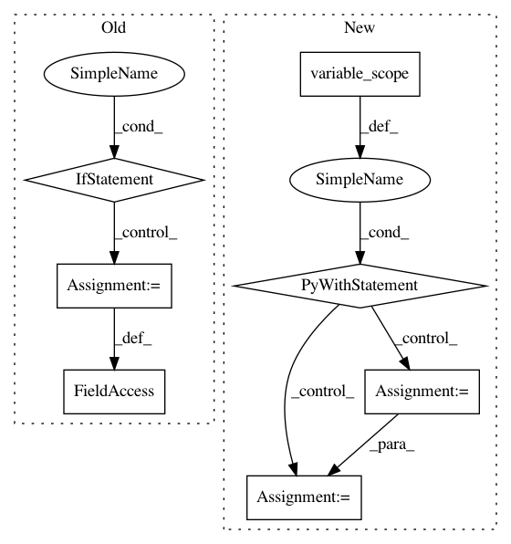

b2e6cccd53bd6c076c32421b8c4d562a96437524,tensorlayer/layers/normalization.py,LayerNormLayer,__init__,#LayerNormLayer#Any#Any#Any#Any#Any#Any#Any#Any#Any#Any#Any#,228
Before Change
begin_params_axis=-1,
name="layernorm"):
if tf.__version__ < "1.3":
raise Exception("Please use TF 1.3+")
Layer.__init__(self, name=name)
self.inputs = layer.outputs
logging.info("LayerNormLayer %s: act:%s" % (self.name, act.__name__))
with tf.variable_scope(name) as vs:
self.outputs = tf.contrib.layers.layer_norm(
self.inputs,
center=center,
scale=scale,
activation_fn=act,
reuse=reuse,
variables_collections=variables_collections,
outputs_collections=outputs_collections,
trainable=trainable,
begin_norm_axis=begin_norm_axis,
begin_params_axis=begin_params_axis,
scope="var",
)
variables = tf.get_collection(TF_GRAPHKEYS_VARIABLES, scope=vs.name)
self.all_layers = list(layer.all_layers)
self.all_params = list(layer.all_params)
self.all_drop = dict(layer.all_drop)
self.all_layers.extend([self.outputs])
self.all_params.extend(variables)
After Change
if tf.__version__ < "1.3":
// raise Exception("Please use TF 1.3+")
with tf.variable_scope(name) as vs:
self.outputs = tf.contrib.layers.layer_norm(
self.inputs,
center=center,
scale=scale,
activation_fn=act,
reuse=reuse,
variables_collections=variables_collections,
outputs_collections=outputs_collections,
trainable=trainable,
// begin_norm_axis=begin_norm_axis,
// begin_params_axis=begin_params_axis,
scope="var",
)
variables = tf.get_collection(TF_GRAPHKEYS_VARIABLES, scope=vs.name)
else:
with tf.variable_scope(name) as vs:
self.outputs = tf.contrib.layers.layer_norm(
self.inputs,
In pattern: SUPERPATTERN
Frequency: 3
Non-data size: 7
Instances
Project Name: tensorlayer/tensorlayer
Commit Name: b2e6cccd53bd6c076c32421b8c4d562a96437524
Time: 2018-03-10
Author: dhsig552@163.com
File Name: tensorlayer/layers/normalization.py
Class Name: LayerNormLayer
Method Name: __init__
Project Name: OpenNMT/OpenNMT-tf
Commit Name: 963710e3d38c9ad1d8b8cc1419a3bd1b3dddde1f
Time: 2018-11-09
Author: guillaumekln@users.noreply.github.com
File Name: opennmt/utils/optim.py
Class Name:
Method Name: optimize
Project Name: zsdonghao/text-to-image
Commit Name: 74796ff02e9425ca336f595978fe6e7c422c0378
Time: 2017-04-11
Author: dhsig552@163.com
File Name: tensorlayer/layers.py
Class Name: DropoutLayer
Method Name: __init__